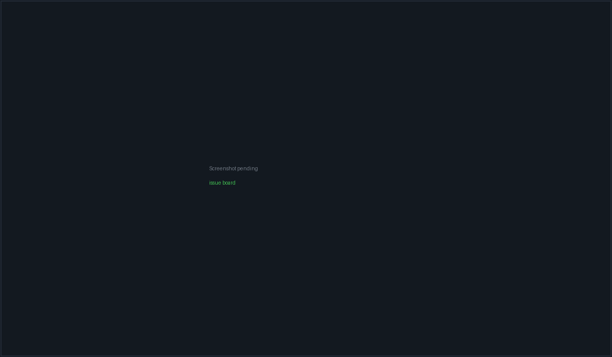

Issues & git hosts#
PacketBench has two issue systems, and it is worth being clear about that up front. The Issues board is a local kanban that lives entirely on your machine — no account, no sync, no network. The Git Hosts pane is a read/write client for GitHub cloud and self-hosted Gitea/Forgejo, with its own issues, pull requests, notifications and releases.
They are connected in exactly three places: an Import to board button, a
Fixes #N commit close-loop, and the optional per-Flight Issue ↔ Flight
mirror. Nothing else syncs automatically.
- Issues — left rail kanban icon, Ctrl+Shift+3
- Git Hosts — left rail GitHub icon (the rail label still reads "GitHub"; the pane's own heading says "Git Hosts")

The local board: six columns, the filter toolbar, and a card showing its flight link and workspace pill.
The local issue board#
Columns#
Six user-facing columns, each backed by one or more stored statuses so nothing ever falls off the board:
| Column | Stored statuses | Drop target |
|---|---|---|
| Backlog | backlog |
backlog |
| Up Next | up_next, legacy todo |
up_next |
| In Progress | in_progress |
in_progress |
| Needs Attention | blocked, needs_human |
needs_human |
| In Review | in_review, qa |
in_review |
| Done | done |
done |
Any status not listed falls back to Backlog. Needs Attention exists so that
escalated work is visible rather than hidden inside In Progress — a Flight
attempt escalation flags its linked issues needs_human, which lands them here.
The six columns share width evenly down to 180px each, below which the row scrolls horizontally rather than wrapping.
An issue whose linked Flight has any attempt with a draft PR open is displayed in In Review regardless of its stored status. This is a display-only override — dragging the card still writes the real status.
The toolbar#
| Control | Behaviour |
|---|---|
Backlog · <project> + count |
The active workspace's name, or packetbench when there is none |
| Search | "Filter by label, agent, flight…" — matches title, labels and the linked Flight's title |
| All labels select | Single-select label filter |
| All flights select | Includes an Unassigned option |
| Import spec | Opens the AI spec importer |
| New issue | Opens the new-issue dialog with Up Next preselected |
Below the toolbar, a strip of multi-select filter chips over labels, epics, workspaces and assignees. Chips compose with the toolbar selects using logical AND.
Drag and drop#
Cards are dragged between columns; the drop writes the target column's
dropTarget status. A drop indicator line shows the insertion point.
Creating an issue#
Each column header and the bottom of each column carry a + / Add that opens the dialog with that column's drop target preselected.
| Field | Options / notes |
|---|---|
| Title | Required — "Issue title…" |
| Description | "Describe the issue…" |
| Priority | Low / Medium / High / Critical (default Medium) |
| Status | To Do, In Progress, QA, Done, Blocked, Needs Human |
| Labels | Multi-select over the label vocabulary |
| Epic | Only rendered once at least one epic exists |
| Flight | Only rendered once at least one Flight exists |
| Acceptance criteria | Free-text list, "Add criterion…" |
| Blocked by / Blocks | Selects over existing issues |
The Status dropdown is missing three of the nine statuses —
backlog, up_next and in_review are not in its option list, even
though the board has columns for all three. Opening the dialog from the
Backlog or Up Next column preselects a status that has no matching option, so
the control renders blank. Leave it alone and the issue still lands in the
right column; touch it and you can only pick from the six that are listed. The
issue detail panel has all nine and can fix it after the fact.
Ticket ids#
Ids are <prefix>-<n> with the number zero-padded to three digits — PKT-001
by default. The prefix is configurable; the next number is derived by scanning
existing ticket ids for the current prefix, so changing the prefix does not
renumber anything already created.
Default labels#
A fresh install seeds: bug, feature, enhancement, refactor, docs,
api, frontend, working, devops.
The issue detail panel#
Clicking a card opens a detail panel with the full nine-status button row (Backlog, Up Next, To Do, In Progress, In Review, QA, Done, Blocked, Needs Human), an assignee field ('username, email, or "me"'), a Flight assignment select ("Assign to flight…", with a "Remove from flight" control), the acceptance-criteria checklist, dependency lists, and a comment thread.
Comments carry an author of user, system or agent. System comments are how
the close-loop leaves its audit trail.
Send to Workspace#
The card's Send to Workspace button ("Send this issue to a new workspace and start Claude on it") does a lot in one click:
- Resolves a project path from the active workspace, falling back to the global project path. Bails with no feedback if there is none.
- Provisions a per-issue git worktree via
createIssueWorktree. - Creates a workspace named
Issue #<n>: <title>(truncated to 60 characters) at that worktree, with the preferred CLI slot. - Seeds the workspace prompt with an envelope:
--- Issue PKT-007: Fix the login redirect ---
<description, or "(no description)">
**Acceptance criteria:**
- [ ] Redirect preserves the query string
- [x] Session cookie survives
--- Please proceed. ---- Stamps
workspaceId,sessionIdandsentToWorkspaceAton the issue, and flips it toin_progress(unless it was already Done). - Activates the workspace and switches to the Workspace view.
From the detail panel you can also send to an existing workspace, which writes the same envelope directly into the first pane that has a live PTY.
The auto-Done close loop#
The worktree created in step 2 installs a prepare-commit-msg hook that appends
Fixes #<n> plus a Run-By: PacketBench issue I-<id> trailer to every commit
made inside it. When a commit lands, the backend scans the message for
Fixes #N / Closes #N / Resolves #N, resolves it against the live issue set,
and emits an event. PacketBench then flips that issue to Done and adds a
system comment:
Auto-closed by commit
a1b2c3d:<commit subject>
This loop only fires when the worktree was actually provisioned. If provisioning fails — uncommitted changes in the main checkout, a branch-name conflict, a non-git project — the pane still opens, but it runs in the bare project root with no hook installed and auto-Done will never fire. The same is true for an issue whose ticket id has no numeric suffix. Both cases are logged to the console; neither surfaces in the UI.
Closing an issue this way deliberately does not kill the linked pane — the agent session stays alive for follow-up work.
Import spec → issues#
Import spec opens a two-stage modal.
Stage 1 — Paste. "Paste your spec, PRD, design doc, or feature description. AI will break it into discrete Issue tickets." The project path is captured when the modal opens, so switching workspaces mid-edit cannot retarget the extraction.
Stage 2 — Review. Each extracted draft renders as an editable row (title,
body, labels, acceptance criteria, suggested epic) with a checkbox, all checked by
default. Create N tickets stamps a shared specImportBatchId on every issue
created in that batch, so siblings can be recognised later.
| Limit | Value |
|---|---|
| Max spec size | 200 KB |
| Timeout | 120 seconds |
Failure modes are handled inline with the spec text preserved for a retry:
- No configured API provider → an error naming the feature and pointing at Settings → API Keys.
- Zero tickets returned → "The model returned zero tickets. Try a more concrete spec."
- Non-JSON response → "Spec response was not valid JSON (…). Raw preview: …" with the first 500 characters shown verbatim.
- Timeout → "Spec import timed out after 120s."
Closing the modal at any point discards staged drafts. There is no auto-save.
The extraction runs through PacketBench's auxiliary-task routing (Settings → AI Provider Routing), or the cheapest configured API key when no route is set. It used to fire a one-shot Claude subscription session; that was deliberately removed because it routed subscription credentials for work you never chose a provider for. A stale code comment still says "claude-oauth sidecar" — the implementation does not.
Git hosts#
Supported hosts#
| Host | API base | Auth header | Base URL needed |
|---|---|---|---|
| GitHub (cloud) | https://api.github.com |
Bearer <token> |
No |
| Gitea / Forgejo (self-hosted) | <yourInstance>/api/v1 |
token <token> |
Yes |
Gitea and Forgejo share the same /api/v1 surface and are one host kind.
Connecting#
GitHub — the connect screen opens the guided setup wizard, which offers
both credential kinds on one step: Sign in with GitHub (the OAuth device
flow, requesting repo read:org notifications) and a pasted personal access
token. The browser option only appears when the build has an OAuth app client
id configured (baked in, or PACKETBENCH_GITHUB_CLIENT_ID); otherwise the step
is the token field alone. Either way the credential is checked against GitHub —
identity plus the scopes it reports on x-oauth-scopes — before anything is
written to the keyring.
Gitea / Forgejo — added from Settings with a base URL, a label and a token.
The token hint reads "Settings → Applications → Generate New Token (scope: repo,
issue)". The URL must start with http:// or https://; a pasted …/api/v1
root is accepted and stripped back to the origin. The connection id is derived
from the host (gitea-git-example-com, de-duplicated with a numeric suffix).
Tokens are stored in the OS keyring, never in frontend state, workspace records or ordinary files. The GitHub connection cannot be removed; removing any other connection deletes its token and falls the active connection back to GitHub.
Which host a repo belongs to#
PacketBench resolves the host from the repo's origin remote. github.com and
its subdomains resolve to the GitHub connection; any other host is matched
against your configured Gitea base URLs. Both HTTPS and scp-style
(git@host:owner/repo.git) remotes are parsed, and ports are ignored so an SSH
remote still matches a connection whose base URL carries :3000.
Once a second connection exists, a Host strip appears above the tabs letting you override the resolved connection manually.
Per-host capabilities#
Not everything works on both hosts, and PacketBench gates rather than failing mid-request:
| Feature | GitHub | Gitea / Forgejo |
|---|---|---|
| Issues, PRs, comments, labels, milestones, assignees | Yes | Yes |
| Repos, branches, releases, notifications | Yes | Yes |
| PR diff | Via Accept: application/vnd.github.diff |
Via a .diff URL suffix |
| PR reviews (viewing) | Yes | Yes |
| Inline review comments (authoring) | Yes | No |
| Check runs | Yes | No |
| Activity feed | Yes | No |
| Draft ⇄ ready toggle | Yes | No |
| AI assist (investigate, PR description, PR review, catch-up, triage) | Yes | No |
What you actually see on a Gitea workspace:
- The Activity tab is hidden entirely.
- The Checks sub-tab on a PR is hidden, and the checks API degrades to an empty result rather than a 404.
- The draft toggle errors with "Draft toggle isn't supported on Gitea — prefix the PR title with "WIP:" instead."
- Authoring an inline review comment errors with "Inline review comments aren't supported on Gitea yet — post a regular PR comment instead."
- Every AI feature errors with "This AI feature is available on GitHub workspaces only."
Pagination also differs under the hood — GitHub uses per_page, Gitea uses
limit — but that is handled for you.
One command is not gated. Replying to an existing PR review
comment hard-codes api.github.com and carries no host check, so on a Gitea
workspace it will fire your GitHub token at GitHub with a Gitea repo path. The
realistic outcome is a 404. Use a regular PR comment on Gitea instead.
Tabs#
| Tab | Contents |
|---|---|
| Issues | Host issues for the selected repo, with a count badge |
| Pull requests | Host PRs, with a count badge |
| Activity | Typed events feed — GitHub only |
| Inbox | Notifications, global to the authenticated user, so it renders even with no repo selected. Badged with the unread count |
| Releases | Repo releases, loaded lazily on first open |
A synced <relative time> / not synced yet indicator sits at the right end of
the tab strip. Every tab except Inbox needs a repository: "Select a repository
to begin."
Issue actions#
Selecting a host issue gives you a close/reopen toggle, label, assignee and milestone editors, a comment list and composer, plus four CTAs:
| Button | Effect |
|---|---|
| Import to board | Creates a local issue titled [GH-<n>] <title>, body copied, labels copied, status todo (which displays in Up Next) and priority medium. A one-way copy — nothing syncs afterwards |
| Investigate with AI | Runs the configured AI route against the issue. Disabled on Gitea and on SSH workspaces: "AI investigation is available for local GitHub Workspaces only" |
| Plan flight | Stages a Flight seeded from the issue body. Attempts are then launched from Flight Deck |
| Branch from issue | Creates and checks out issue-<n>-<slug> in the active local workspace. Disabled on a remote workspace: "Use the Workspace Git panel to create a branch on this SSH project" |
Pull request actions#
For an open, non-draft PR:
| Button | Notes |
|---|---|
Merge (<strategy>) |
A split button. The dropdown offers Create a merge commit, Squash and merge, Rebase and merge. Seeded from your Settings default; the local choice can drift within a session without being written back |
| Close | Closes without merging |
| Convert to draft | GitHub only |
A draft PR gets Ready for review instead; a closed PR gets Reopen; a merged PR shows only "Merged — This pull request has been merged."
Each action routes through an inline confirm step by default. Settings → GitHub lets you opt out of it; the non-destructive actions go through the same guard for consistency.
Every action re-checks that the active connection and selected repo have not changed before applying its result, so switching hosts or repos mid-request cannot write an outcome onto the wrong repository.
The PR detail panel has an Overview sub-tab and, on GitHub, a Checks sub-tab. Below the diff sit an AI pre-flight review and then the human review threads, in that order.
Error messages#
Host API errors are sanitised before they reach you — the raw response body is logged, not displayed:
| Status | Message |
|---|---|
| 401 | GitHub API error 401: unauthorized — check your GitHub token |
| 403 | … forbidden — you may lack permissions or be rate-limited |
| 404 | … not found — the resource may not exist or may be private |
| 422 | … validation failed — check your request parameters |
| 429 | … rate limited — try again later |
| 5xx | … GitHub server error — try again later |
The prefix says "GitHub API error" for Gitea responses too. The status code and reason are still accurate.
Issue ↔ Flight mirror#
The one genuinely bidirectional bridge, configured per Flight from Flight Deck, not from either issue surface:
"Each task becomes a host issue grouped under a milestone named for this Flight. Changes reconcile every 60 seconds with revision fences and visible conflicts."
It requires a repository selected in the Git Hosts pane. Conflicts are surfaced rather than resolved silently — "The newer value already won. The losing value remains here until you acknowledge the reconciliation." — showing the issue number, the field, which side won, and both values.
Where data lives#
| Data | Location |
|---|---|
| Local issues | localStorage under packetbench:issues, mirrored into the Rust persisted state so the Fixes #N close loop can resolve them |
| Git host tokens | The OS keyring |
| Gitea connections | Persisted app config (base URL and label only — the token is keyring-side) |
| Host issues, PRs, notifications | Not persisted; fetched on demand |
Related#
- Flight Deck — Plan flight, draft PRs, and the Issue ↔ Flight mirror
- Workspaces & terminals — where Send to Workspace lands
- Agents & conversations — the agent that receives the issue envelope
- Settings reference — ticket prefix, git host connections, merge defaults, AI routing
- SSH remote workspaces — why several CTAs are disabled on remote workspaces